전후 건축 붐이 남긴 좀비 빌딩
발표는 건축 이야기로 시작해요. 2차 세계대전이 끝나고 미국에는 역사상 가장 큰 건축 붐이 일었어요. 전쟁에서 돌아온 사람들, 새 기술, 새 공법이 한꺼번에 몰렸죠. 이때 건설사들이 가져다 쓴 게 1920년대의 모더니즘이에요. 단순한 기하학, 맨 표면, 단색, 장식 없음이 특징이에요.
그런데 모더니즘을 만든 사람들에게는 분명한 관점이 있었어요. 아래 왼쪽 큰 사진처럼 흰 수평 띠가 겹겹이 떠 있는 집, 오른쪽의 넓은 유리창 거실이 그 시절의 의도된 모더니즘이에요.
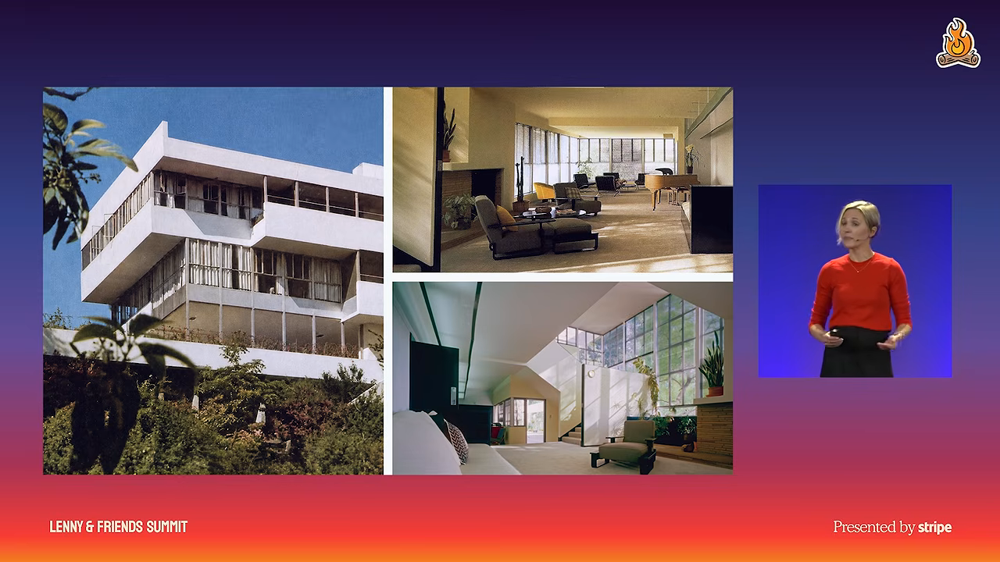
발표자는 빌라 사보아와 바우하우스를 예로 들어요. 다음 슬라이드 오른쪽 건물 벽에 세로로 'BAUHAUS' 글자가 보여요. 이런 건물 뒤에는 원칙이 있었어요.

겉모양만 남은 복제
전후에는 빨리 지어야 했고, 양식은 의도 없이 계속 복제됐어요. 생각은 얇아지고 맥락에 안 맞는 패턴만 남았죠. 발표자는 은행 건물 두 장으로 이 변화를 보여 줘요. 먼저 1857년 로체스터 저축은행이에요. 슬라이드 오른쪽 위 작은 글씨에 'Rochester Savings Bank Building, 1857'이라고 적혀 있어요.
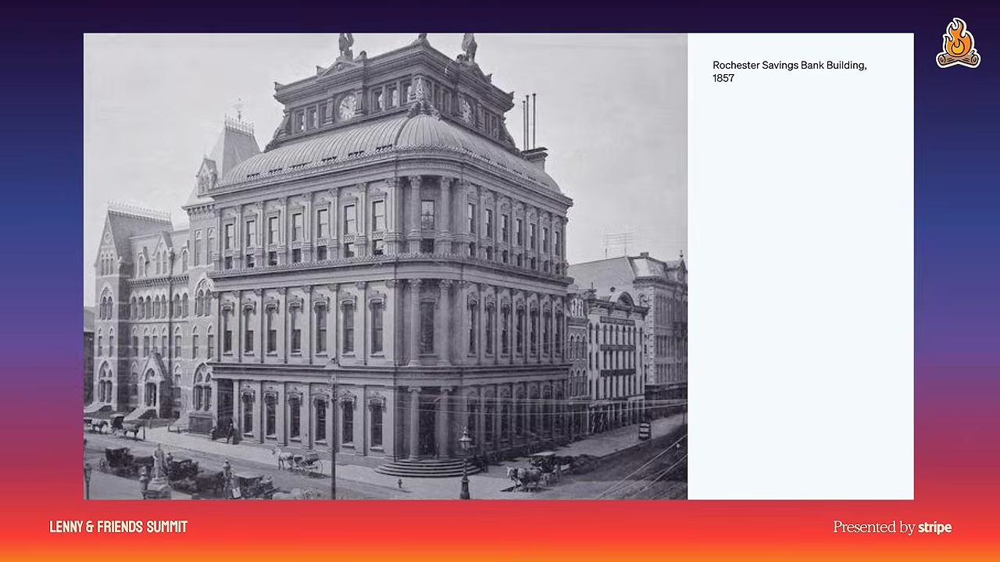
그다음이 1955년 메이컨-애틀랜타 주립은행이에요. 낮은 상자 건물에 주차장 안내판이 서 있어요. 은행이라는 걸 알려 주는 단서가 거의 없어요.
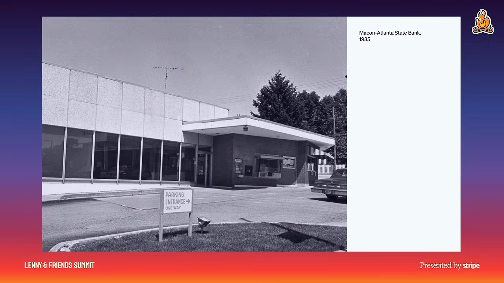
이런 건물은 수십 년 동안 지어져 지금도 주변에 가득해요. 슬라이드는 비슷한 상자 건물 사진 수십 장을 바둑판처럼 채워서 그 규모를 보여 줘요. 발표자는 이를 '좀비 빌딩'이라고 불러요. 서로 구분되지 않고, 쓰임새에 맞춘 흔적도 없고, 사용자와 주변 사람, 맥락과 브랜드를 신경 쓰지 않은 건물이에요.
AI 빌딩 붐에서 조심할 세 가지
발표자가 이 건물들을 자꾸 떠올리는 이유는 둘이에요. 하나는 우리가 그 건물들에 둘러싸여 살고 있어서고, 다른 하나는 지금 또 다른 건축 붐, 'AI 빌딩 붐'이 와 있어서예요. 이제 세 명이 예전 서른 명이 하던 일을 해요. 발표자는 전후 건축 붐과 닮은 점을 '경계 지점' 세 가지로 정리해요.
첫째, 가장 그럴듯한 답
LLM은 가장 확률이 높은 답을 잘 내놓아요. 바꿔 말하면 지금까지 통했거나 지금 유행하는 답이에요. 나와 내 브랜드, 내 사용자의 맥락에 맞는 독창적인 답은 잘 못 줘요. 슬라이드에는 AI로 만든 듯한 랜딩 페이지 아홉 개가 나와요. 'Ship faster. Sleep better.', 'Wellness that fits real life.' 같은 문구에 큰 제목, 짙은 배경, 둥근 버튼이 거의 똑같이 반복돼요.
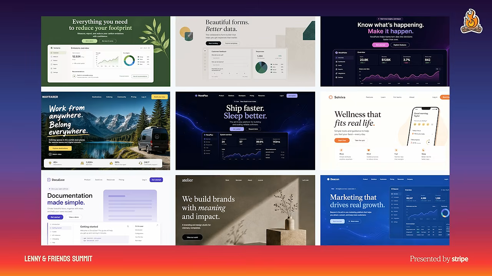
발표자는 청중에게 이 사이트가 뭘 파는지 맞혀 보라고 해요. 검은 배경에 빨간 버튼, 세련된 제목까지 소프트웨어 회사처럼 보이지만, 제목을 읽어 보면 'Utah's #1 All-You-Can-Eat Korean BBQ(Barbecue) & Hot Pot'이에요. 한국식 바비큐 식당이에요.
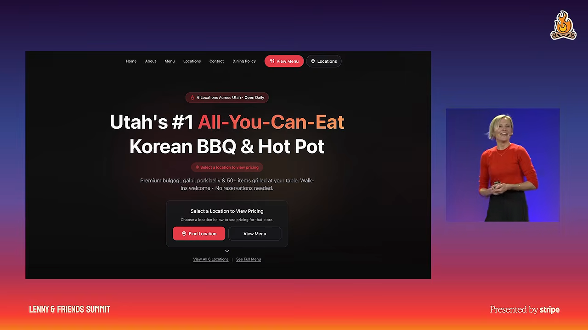
둘째, '다 됐다'의 유혹
AI는 결과물을 아주 빨리, 그리고 너무 이르게 완성된 것처럼 보이게 해요. 발표자는 부끄럽다며 자기 점심 이야기를 꺼내요. 냉동실에서 돌덩이 같은 부리토를 꺼내 전자레인지에 넣으면 90초 만에 점심이 돼요. 거의 못 먹을 맛인데도 빠르다는 데 반해서 큰 결점을 눈감아 줘요. 슬라이드 오른쪽에는 'Microwaved burrito'라는 설명이 붙어 있어요.

AI도 똑같아요. 'Build an interface' 한 줄을 넣으면 곧바로 화면이 나와요. 아래 슬라이드처럼 둥근 모서리 카드가 가지런히 놓인 레이아웃이 금세 생겨요. 그럴듯하게 다듬어진 상태는 오해를 부르기 쉬워요. 정말 문제를 푸는지, 정말 차별화되는지는 아직 아무도 확인하지 않았거든요.
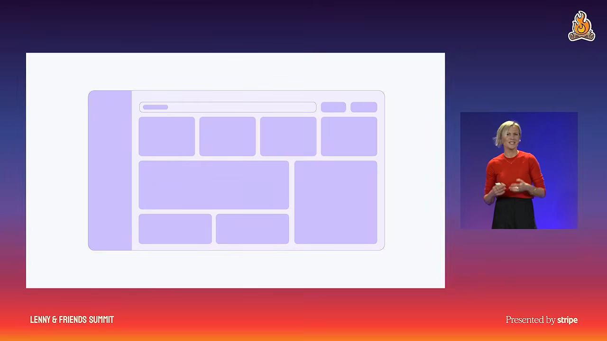
셋째, 쓰고 버리는 물건
너무 쉽고 빨리 만들다 보니 결과물이 일회용처럼 느껴지고, 실제로 그렇게 다뤄지기도 해요. 결정에 대한 책임을 놓치고, 누가 이걸 유지보수할지 같은 긴 안목을 잃어요. 세 가지가 합쳐진 모습으로 발표자는 터키의 실제 마을 사진을 띄워요. 'everyone and their vibecoded website'라는 트윗 아래, 똑같이 생긴 성 모양 집이 언덕을 빽빽하게 덮고 있어요.
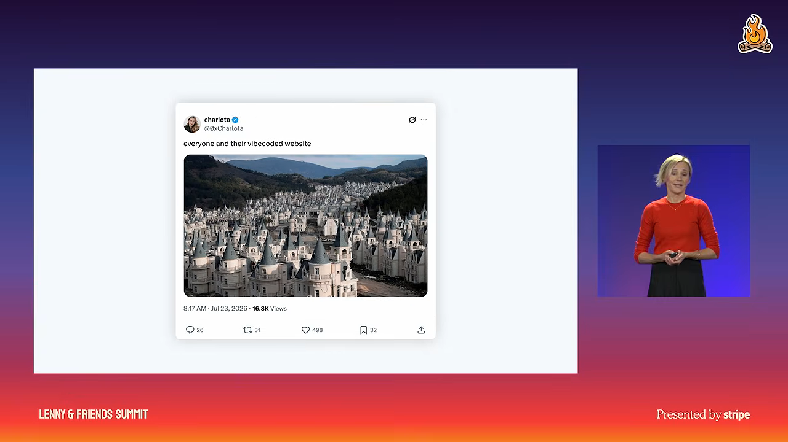
신경 쓴 소프트웨어는 작은 데서 보여요
우리는 깨어 있는 시간의 절반을 화면을 보며 보내요. 그래서 누군가 신경 써서 만든 소프트웨어를 원해요. 첫 예는 Grok Bot이에요. 화면 아래쪽 앱 정보 자리에 작은 로고가 있고, 여기에 붙은 짧은 애니메이션이 앱에 생기를 줘요.
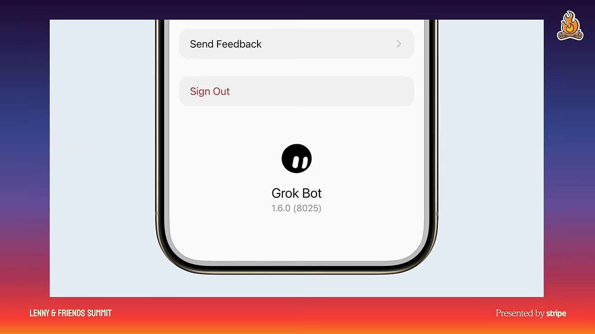
두 번째는 캘린더 탭이에요. 브라우저 탭과 앱 로고 안에 오늘 날짜인 '10'이 들어가 있어요. 하루에도 수십 번 지나치는 디테일이지만, 만든 사람이 사용자를 생각했다는 표시예요.
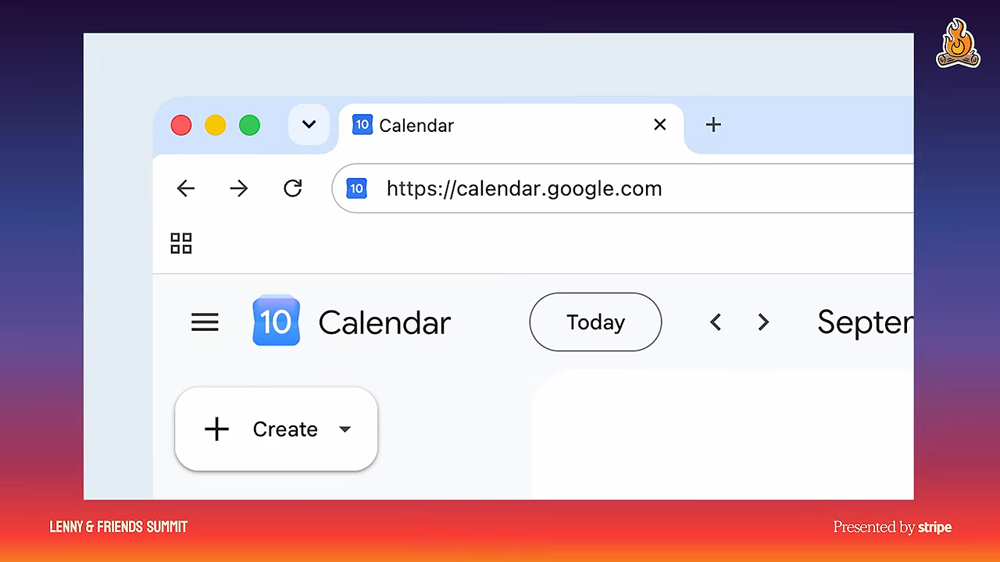
세 번째는 맥락을 이해한 사례로, Link의 에이전트 지갑이에요. 화면에는 에이전트가 보스턴-더블린 직항편을 찾아 주고, 예약을 마치려고 이름과 생년월일, 여권 정보를 묻는 대화가 보여요. 발표자는 이 지갑이 에이전트가 온라인 결제 중 겪을 문제를 미리 내다보고, 해결 방법을 처음부터 넣어 뒀다고 설명해요. 사용자가 사람이 아니라 에이전트일 때도 그 맥락을 챙긴 거예요.
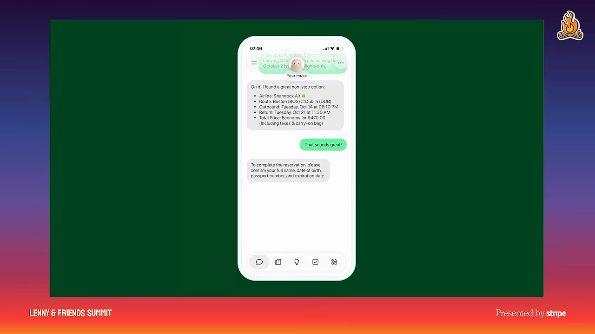
세 사례 모두 브랜드의 성격과 '혼'이 보인다는 게 공통점이에요. 발표자는 AI가 때로 문제의 원인이 되지만, AI로도 이런 걸 만들 수 있다고 말해요. 그 방법으로 네 가지를 제안해요.
하나, 관점을 가져요
첫 번째 추천은 관점을 가지라는 거예요. 관점이 없으면 AI가 대신 정해 주고, 앞에서 봤듯 그 관점은 평범하고 과거를 향하기 쉬워요. 그래서 먼저 브랜드를 정의해야 해요. 발표자가 던지는 질문은 네 가지예요.
- 우리 브랜드는 나에게 무엇인가요?
- 사용자에게는 무엇인가요?
- 사용자에게 어떤 존재가 되고 싶나요?
- 사용자는 무엇을 중요하게 여기나요?
이 답이 기준의 바탕이 돼요. 발표자는 어느 시대에나 할 말이지만 지금은 더 중요하다고 해요. 만드는 일이 여러 사람에게 퍼지면 책임도 흩어지고, 그만큼 AI에게 결정을 넘겨 버리기 쉬워져요.
Stripe의 관점, 낙관
Stripe는 낙관을 중요하게 여겨요. 그래서 고르는 색, 글 쓰는 방식, 다루는 주제, 창업가를 돕는 제품까지 크고 작은 데에 그걸 담아요. 슬라이드의 Stripe 홈페이지를 보면 하얀 바탕 위로 주황, 분홍, 보라가 섞인 밝은 리본 그래픽이 흘러가요. 제목도 '첫 거래부터 10억 번째 거래까지' 성장을 돕는다는 문장이에요.

'AI로 만든 것'의 품질 기준은 따로 있을까요
정렬이 안 되면 마찰이 생겨요. 발표자는 최근 디자인 크릿에서 광고 시안을 본 이야기를 해요. Stripe 로고의 평행사변형을 사용자 쪽 비주얼과 합친 광고로, 얼음 조각처럼 표현한 평행사변형이 탄산음료 속에 떠 있어요. 다들 무슨 그림인지는 알겠는데 뭔가 어색하다고 느꼈어요.
그 자리에 빨리 내보내고 싶어 하던 다른 직군 동료가 흥미로운 질문을 했어요. "AI로 만든 것의 품질 기준은 뭔가요?" 발표자는 이 질문에서 뒷부분을 지워요. 슬라이드에 'for something made with AI'에 줄이 그어져 있어요.
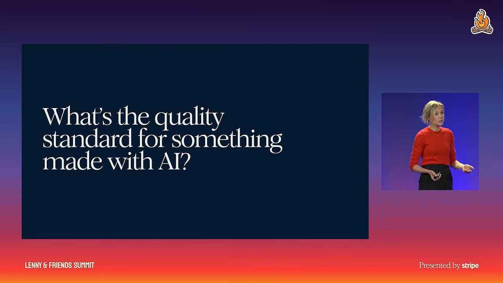
It doesn't matter to the users how it was made. It matters to them if it's good or not.
사용자에게는 어떻게 만들었는지가 중요하지 않아요. 좋은지 아닌지가 중요해요.
— 영상 06:56
그 논의로 무엇이 중요한지 합의했고, 개선점 17개를 들고 나왔어요. 아래 피드백 문서를 보면 왼쪽에 A부터 Q까지 항목이 빼곡하고, 오른쪽 시안 위에 보라색 점으로 고칠 위치가 표시돼 있어요. 발표자가 예로 든 건 서리를 조금씩 더하고, 모서리를 부드럽게 하고, 기포를 조금 작게 하는 것들이에요.
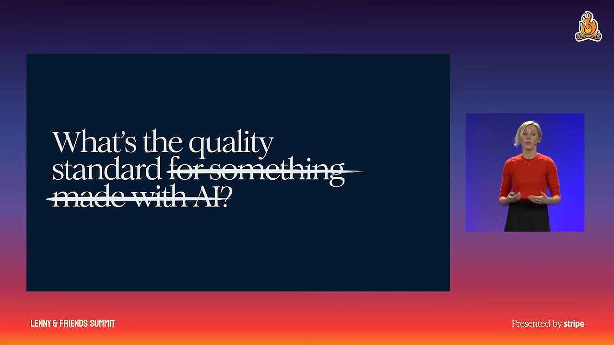
이 일 이후 Stripe 사무실에서는 꼼꼼한 마무리를 뜻하는 동사로 'Pepsi bubbling'이라는 말을 쓴대요. 목표는 완벽이 아니에요. 고객이 볼 수 있는 것보다 한 단계 더 깊이 가는 거예요. 그 꼼꼼함은 결국 고객에게 드러나요. 에이전트가 끼고 하루에 일어나는 일이 많아질수록 이런 관점이 기준과 작업을 이끌어요.
관점은 어떻게 기르나요
발표자의 답은 '알아차리는 힘'이에요. 사용자가 말하는 것만이 아니라 실제로 필요로 하고 원하는 걸 알아차려야 해요. 주변에서 무엇이 좋고, 훌륭하고, 그저 그런지도 눈여겨봐야 해요. 내가 쓰는 제품뿐 아니라 예술, 과학처럼 비슷한 구조를 가진 다른 분야에서도 영감을 얻으라고 해요. 이렇게 길러 낸 안목이 내 기준을 높이고, 그 기준을 다음 단계에서 넓혀 가야 해요.
둘, 기준을 기계에 심어요
두 번째 추천은 기준을 기계에 심으라는 거예요. 모든 사람이 같은 이해를 갖고 같은 결정을 내리면 좋겠지만, 앞으로는 사람이 모든 결정에 끼어들 수 없어요. 발표자는 이미 벌어지는 일 세 가지를 꼽아요. 디자이너 없이 인터페이스가 만들어지고, 에이전트가 우리가 자는 동안 문제를 찾아 고치고, 제너레이티브 UI가 사용자에게 실시간으로 만들어져요.
아래 슬라이드가 그 장면이에요. 왼쪽에는 연보라 카드로 된 레이아웃이 있고, 오른쪽 패널에는 채팅 입력창과 'Worked for 30s' 같은 작업 기록이 보여요. 사람이 아니라 대화창에 적은 요청이 화면을 짜고 있는 모습이에요.
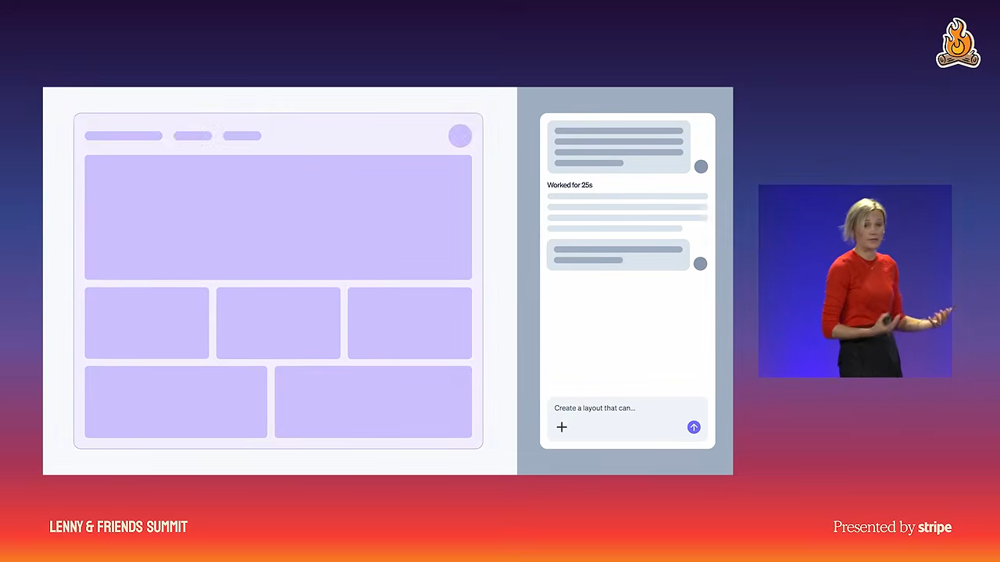
그래서 디자인 시스템이 다시 주목받는다고 해요. 다만 어제의 시스템과 오늘의 시스템은 달라요. 예전에는 디자이너가 늘 같은 방에 있어서 모든 걸 적어 두지 않아도 됐어요. 이제는 여러 사람이 흩어져 만들고 에이전트가 조립하니, 결정을 더 쉽게 정의할 수 있어야 해요. 발표자는 이렇게 정리해요.
The object of design is no longer the screen. It is the system itself.
디자인의 대상은 더 이상 화면이 아니에요. 시스템 그 자체예요.
— 영상 09:45
구텐베르크의 290개 활자
발표자는 구텐베르크 이야기를 꺼내요. 그가 첫 인쇄기를 만든 건 다들 알지만, 그 주위에 만든 시스템은 덜 알려져 있어요. 아래 판화는 구텐베르크가 인쇄소에서 갓 찍은 종이를 살펴보는 장면이에요.
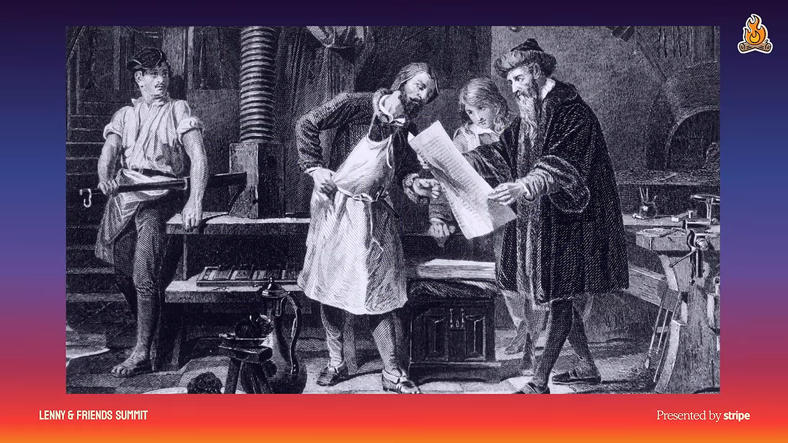
그는 소문자 26자, 대문자 26자만 만들지 않았어요. 폭이 다른 글자, 약어, 합자까지 290개의 활자를 만들었어요. 양쪽 정렬로 조판할 때 흰 틈이 강이나 호수처럼 고이지 않게 하려고요. 아래 펼친 성경 지면을 보면 두 단의 글줄이 좌우 끝까지 고르게 채워져 있고, 빨간 머리글자가 군데군데 들어가 있어요.
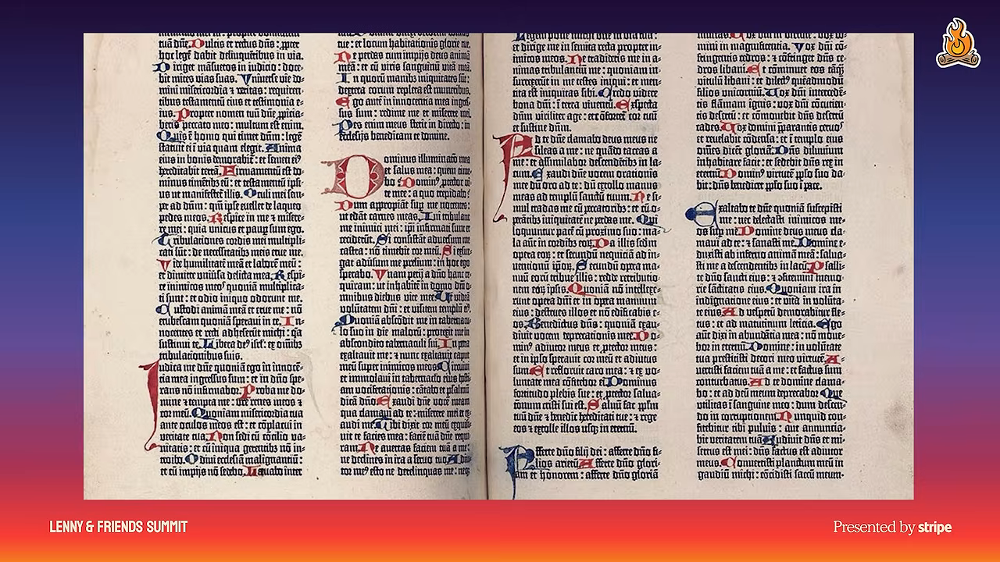
발표자의 해석은 이래요. 구텐베르크는 시스템을 충분히 확장 가능하면서도 의견이 분명하게 만들었어요. 그래서 기계가 찍어도 손으로 만든 것만큼 좋게 느껴졌어요. 우리가 목표로 할 것도 이거예요.
| 옛 디자인 시스템 | 새 디자인 시스템 | |
|---|---|---|
| 키우는 것 | 일관성 | 의도 |
| 빈칸은 누가 채우나요 | 방 안의 디자이너 | 시스템에 미리 적어 둔 결정 |
| 담는 것 | 컴포넌트와 작은 부품 | 전체 템플릿과 흐름까지 |
| 성격 | 상대적으로 느슨함 | 훨씬 의견이 분명함 |
Stripe가 해 본 것: MCP에서 CLI로
Stripe의 목표는 만드는 사람이 프롬프트에서 출시까지 거의 바로 가게 하는 거예요. 처음엔 많은 회사처럼 디자인 문서를 이해하는 MCP(Model Context Protocol) 서버를 붙였어요. 그런데 결과가 충분히 구체적이지 않았어요. 세 사람이 같은 프롬프트를 넣으면 세 가지 다른 결과가 나왔대요.
그래서 디자인 시스템 위에 CLI(Command-Line Interface)를 만들었어요. 아래 화면은 그 도구의 첫 화면이에요. 'Welcome to Kai' 아래 입력창에 Stripe 디자인 시스템 이름인 'Sail' 태그가 붙어 있고, 'Build a form that can...'처럼 요청을 적어요.
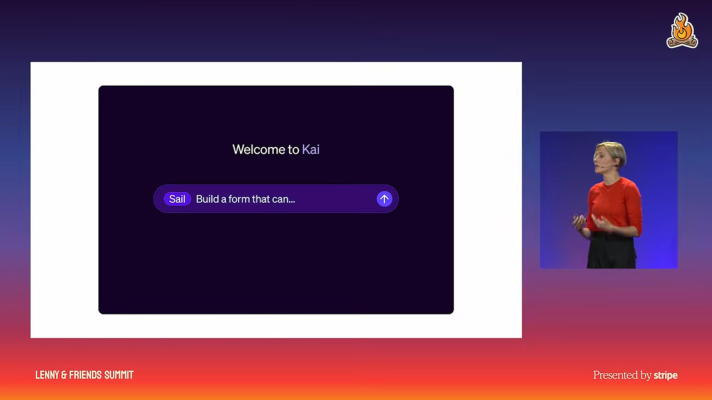
다음 화면은 이 CLI가 문서를 꺼내 오는 모습이에요. 맨 위 줄 명령은 pay sail docs lookup DateRangePicker --json이고, 그 아래로 DateRangePicker 컴포넌트의 설명, 패키지 이름 @sail/ui, 쓸 수 있는 props 목록이 JSON(JavaScript Object Notation)으로 나와요.
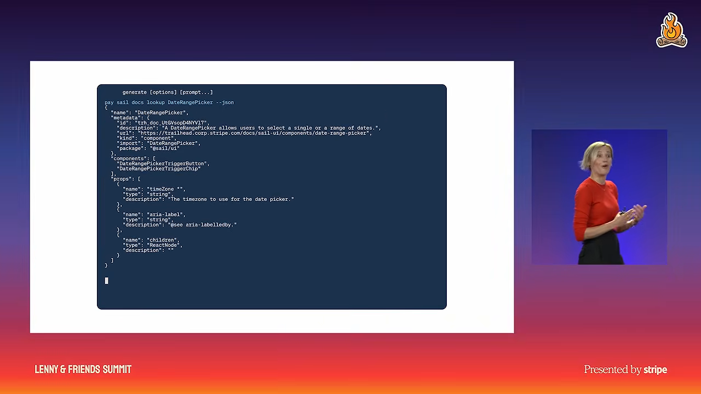
발표자는 이 CLI가 AI를 훨씬 말 잘 듣게 만드는 하네스라고 설명해요. 만드는 사람이 실제로 일하는 자리에 있고, 문서를 맞는 때와 자리에서 읽혀서 컨텍스트 로트를 피해요.
예전 디자인 시스템과 가장 다른 점은 컴포넌트와 작은 부품만이 아니라 전체 템플릿과 흐름까지 담았다는 거예요. 아래 슬라이드에는 단계별 작업 흐름('Identify fit with the system', 'Create a package', 'Document component'), 계좌 잔액 카드, 결정 흐름도, 코드 조각이 한 판에 모여 있어요.
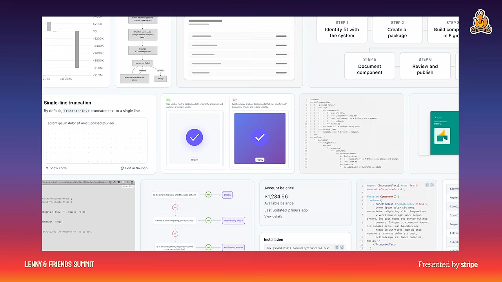
이렇게 기준을 만드는 수단 자체에 심어 두면 제품이 더 한결같아져요. 하지만 발표자는 이건 바닥일 뿐이라고 덧붙여요.
셋, '다 됐다'와 '좋다'를 헷갈리지 마요
시스템에 기준을 심어도 끝이 아니에요. 발표자는 건축가 Christopher Alexander의 말을 띄워요. 보라색 슬라이드에 그 한 문장만 크게 적혀 있어요.
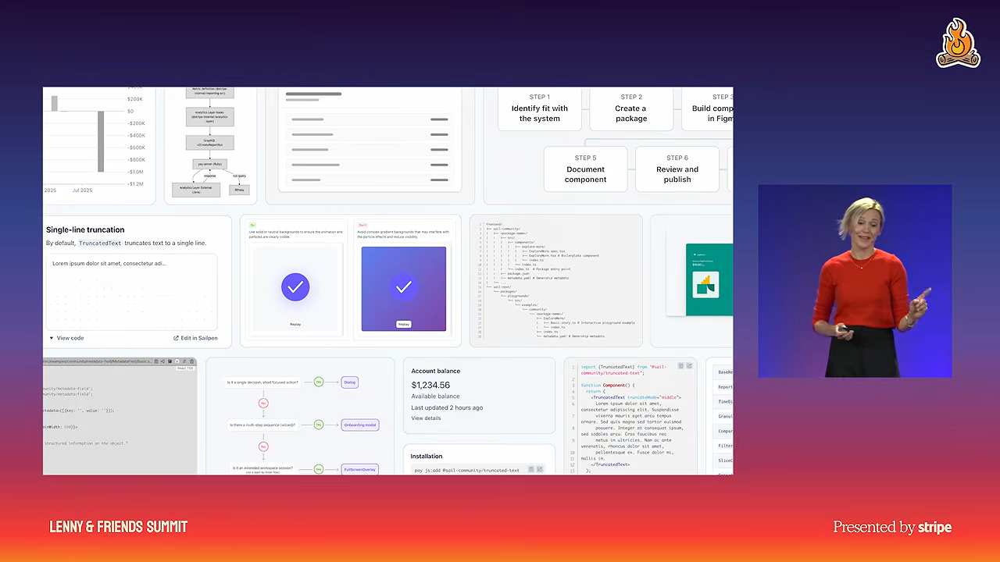
세 번째 추천은 '다 됐다'와 '좋다'를 헷갈리지 말라는 거예요. 발표자는 필터가 사라졌다고 말해요. 예전에는 품질을 거르는 일이 제품 개발의 모든 단계에, 심지어 프로젝트가 시작되기 전부터 들어 있었어요. 아이디어가 20개 있어도 인력은 하나에만 붙일 수 있었고, 만드는 동안에도 찔러 보고, 따져 보고, 가지를 쳤어요.
이제는 일주일에 아이디어 20개를 다 만들 수 있어요. 발표자는 이게 여러모로 멋진 일이라고 봐요. 가상의 제품을 두고 이론적인 회의를 할 필요 없이, 손에 쥔 실물을 보고 반응하면 되니까요. 다만 거르는 일이 만든 뒤로 밀렸고, 이미 만든 걸 거절하기는 훨씬 어려워요.
편집자가 필요해요
그래서 편집자의 역할이 아주 중요해졌다고 해요. 조직에서 누가 처음부터 끝까지를 보고, 우리가 하나의 온전한 전체를 만들고 있는지 판단하나요? 이건 새로 익혀야 하는 행동이에요. '만들었다'가 '다 됐다'는 뜻이 아니고, '다 됐다'가 '좋다'는 뜻도 아니라는 걸 다시 배워야 해요.
편집 실력을 기르려는 사람에게 발표자가 가장 강조하는 건 사용자처럼 직접 겪어 보는 거예요. 확인할 질문은 이래요.
- 정말 문제를 푸나요?
- 사용자가 생각하는 방식에 맞춰져 있나요?
- 앞뒤가 이어지나요? 따로 보면 좋은데 사용자 여정으로 이으면 어색하지 않나요?
- 예, 아니요를 넘어서, 애초에 완성된 형태이긴 한가요? 어떻게 끝까지 밀어붙일 수 있을까요?
AI가 약한 곳: 디테일과 깊이
발표자는 Nabeel Qureshi의 글 '무엇이 예술을 위대하게 만드는가(What Makes Art Great?)'를 소개해요. 슬라이드에는 그 글의 첫 화면이 나오는데, 제목 아래 푸른 타일로 덮인 이슬람 사원 천장 사진이 있어요.

이 글은 위대한 예술의 조건을 셋으로 봐요. "어떻게 이것까지 생각했지" 싶은 예상 못 한 디테일, 표면 아래 깔린 깊은 의미, 전체를 하나로 묶는 이어지는 주제예요. 발표자는 셋 다 AI가 잘 못하는 부분이라고 말해요. AI의 빈틈을 알면 그걸 메우며 일할 수 있어요.
이어지는 슬라이드는 그 글의 한 문장이에요. 컵이 초록색인데, 파란색이었어도 상관없었을 것 같은 느낌을 예로 들어요.
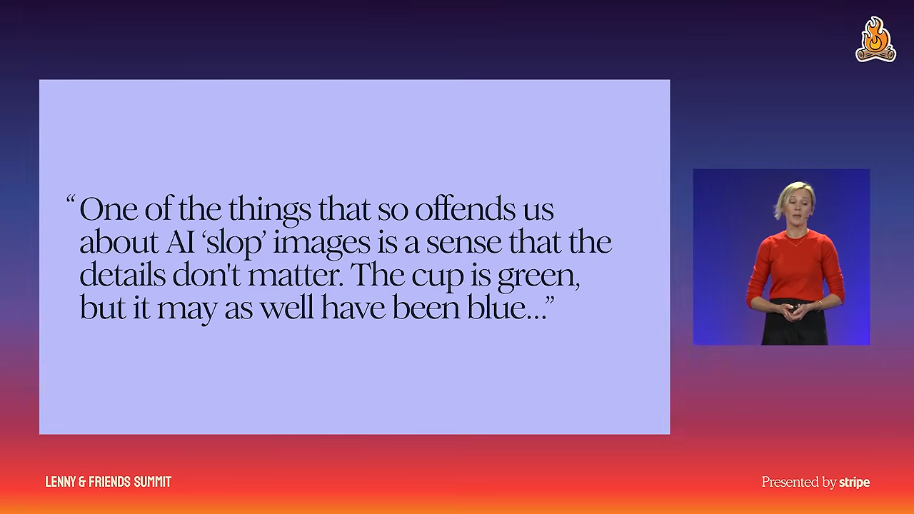
편집자는 모든 결정, 어떤 면에서는 모든 픽셀에 책임을 져요.
56번 다시 만든 오프닝 애니메이션
발표자의 팀은 이 행사의 디자인을 맡았어요. Stefan이 만든 오프닝 애니메이션이 예시예요. 팀은 먼저 장면의 3D 모델을 만들었어요. 아래 화면은 3D 프로그램 안의 회색 모델로, 텐트, 모닥불, 캠핑 밴, 나무가 색 없이 형태만 잡혀 있어요.
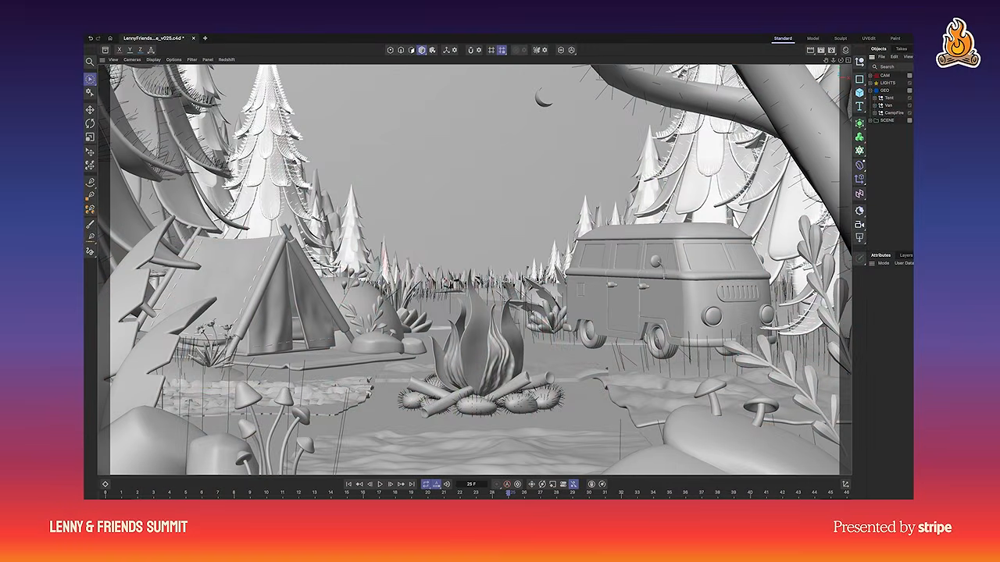
그다음 AI로 여러 애니메이션을 만들었어요. 첫 버전은 아래처럼 색과 질감이 다 입혀져 있고 그럴듯해요. 그런데 한 픽셀씩 뜯어보면 움직임이 뚝뚝 끊기고, 장면을 더 보여 줬으면 하는 아쉬움이 있었대요.
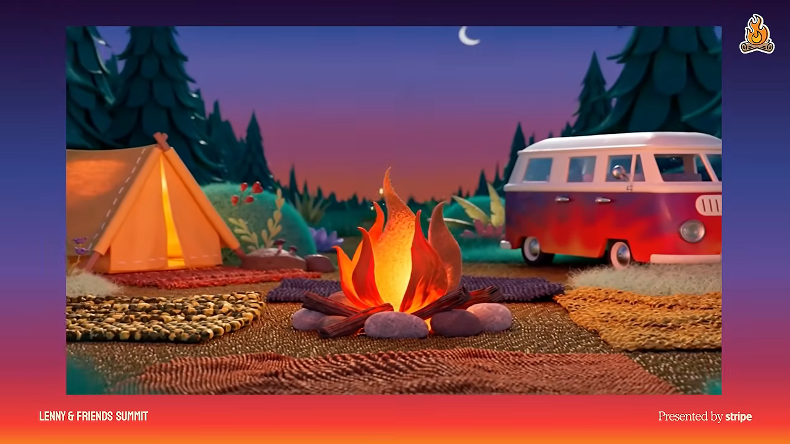
그래서 다시 하고 또 했어요. 아래 슬라이드는 그동안 만든 버전을 작은 칸으로 늘어놓은 거예요. 시점과 불꽃, 밴의 위치가 칸마다 조금씩 달라요. 모두 56번이에요.
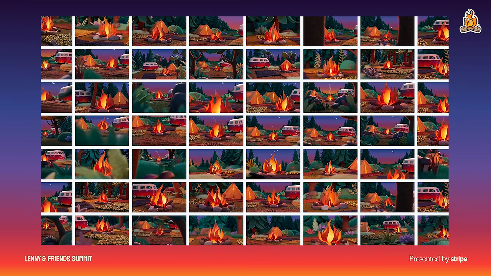
마지막 버전은 더 사실적이고 생기가 있어요. 차이는 미묘하지만 신경 쓴 게 느껴진대요. 아래 최종 장면에는 행사 이름 'LENNY & FRIENDS SUMMIT'이 텐트와 밴 사이에 들어가 있어요.
발표자가 가장 인상 깊게 본 점은 따로 있어요. AI가 없었다면 그렇게 복잡한 장면을 만들거나 그렇게 많은 시점을 시도해 보지 못했을 수도 있다는 거예요. 한 번에 끝나지 않았고 끈기와 꼼꼼한 검토가 들었지만, AI가 가능성의 폭을 넓혀 줬어요.
넷, 창의성과 예술성을 풀어놓아요
네 번째이자 발표자가 가장 아끼는 추천은 창의성과 예술성을 풀어놓으라는 거예요. AI는 단조로움을 대량으로 찍어 낼 수도 있지만, 지금까지 우리가 가져 본 가장 큰 창작 촉매이기도 해요. 누구나 뭔가를 만드는 시대에는 차별화가 더 어렵고, 그래서 더 중요해요.
채팅, 차트, CLI가 끝일 리 없어요
발표자는 오늘날 인터페이스를 채팅, 차트, CLI로 요약해요. 슬라이드에도 회색 카드 다섯 장이 나란히 있어요. 채팅 말풍선, 막대그래프, 선 그래프, 목록, 터미널 창 모양이에요.
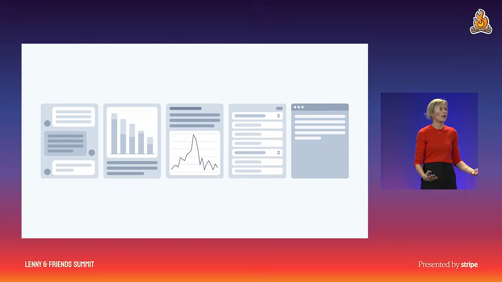
할 수 있는 건 훨씬 많아요. 더 생성적이고, 살아 있고, 반응하고, 역동적으로 느껴지게 만들 수 있어요. 이제는 컴퓨터에 말을 걸 수도 있죠. 멀티터치가 완전히 새로운 인터랙션을, 신시사이저가 완전히 새로운 소리를 가능하게 했듯이 AI도 새 인터페이스와 새 미감을 만들 기회라는 거예요.
The best practices have not been written yet. We get to do that.
모범 사례는 아직 쓰이지 않았어요. 그걸 쓰는 게 우리 몫이에요.
— 영상 17:16
이미 나오고 있는 시도들
온라인에는 벌써 이런 시도가 많대요. 발표자는 Stripe 디자인 팀보다 더 흥미로운 데이터 시각화를 내놓는 사람들도 있다고 웃으며 말해요. 아래 트윗에는 'Stripe dashboards are boring. So I built mine as a forest.'라고 적혀 있어요. 매출 ,203을 아이소메트릭 숲처럼 나무가 자라는 언덕으로 보여 줘요.

AI로 직접 그림을 그리는 사람도 있어요. 다음 트윗은 'You can just RL a coding model to paint with javascript btw'라며, 코딩 모델이 자바스크립트로 그린 그림을 보여 줘요. 초록, 갈색, 파랑 붓질이 가장자리를 덮고 가운데는 별 모양으로 비어 있어요.
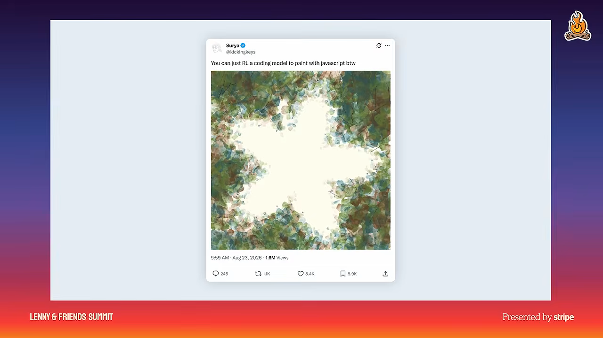
Stripe의 'Built to Grow' 표지
Stripe도 AI로 창작 팀의 능력을 키우고 있어요. 최근 'Built to Grow'의 표지는 사람 마블링 작가가 만들었어요. 아래 세 권의 표지가 그 결과로, 초록과 주황, 파랑이 깃털 무늬로 흘러요.

작가가 만든 여러 시안을 바탕으로, AI로 색과 선이 딱 맞는 자리에 오도록 더 다듬었어요. 다음 슬라이드에는 비슷한 깃털 무늬가 색과 결만 조금씩 다르게 수십 칸 늘어서 있고, 가운데 줄에 완성된 표지 세 권이 끼어 있어요.

AI를 더 나은 창작 파트너로 쓰는 법
발표자는 두 가지를 권해요.
| 무엇을 하나요 | 예 | |
|---|---|---|
| 입력을 좋게 | 내 브랜드와 관심사 쪽으로 더 구체적으로 넣어요. 기준을 만들 때 쓴 원자료도 함께 넣고, 다르게 생각하도록 이끌어요 | '한국식 바비큐 식당 웹사이트 만들어 줘'가 아니라 '우리는 이걸 믿고, 이게 좋은 거고, 이걸 중요하게 여겨'까지 적어요 |
| 출력을 몰아붙이게 | 부리토 딜레마에 넘어가지 말고 늘 한 걸음 더 가요 | 적대적 에이전트에게 비평을 맡기되, 더 나은 걸 요구하는 건 결국 나예요 |
발표자는 이건 요령일 뿐이라고 덧붙여요. 훨씬 어려운 건 문화예요. 그 이야기가 다음 절이에요.
이상한 것을 지키고, 만든 사람의 손길을 남겨요
틀에 박힌 패턴을 따르기는 쉬워요. 안전하고 편하니까요. 하지만 현 상태를 낫게 하는 독특한 걸 찾아내는 게 훨씬 어렵고, 그래서 더 대단해요. 발표자는 팀을 이끄는 사람에게 이렇게 말해요. AI를 쓰라고만 하지 말고 탐색할 여유를 주라고요. 그리고 '이상한 것'을 지켜 주라고요(Protect the strange).
AI는 만드는 비용을 낮췄어요. 발표자는 그 절약분 일부를 정말 특별한 걸 만드는 데 쓰자고 해요. 이미 만들던 걸 더 빨리 만드는 데만 AI를 쓰면 가장 흥미로운 부분을 놓친다는 거예요.
AI can help us raise the ceiling, not just the floor.
AI는 바닥만이 아니라 천장도 올려 줄 수 있어요.
— 영상 20:03
가장 중요한 건 아주 의도적이어야 한다는 점이에요. AI로 구현할 것은 결국 내 관점, 내 시스템, 내 품질 기준, 내 야심이에요. 앞의 네 가지 추천이 이 한 문장으로 모여요.
좀비 빌딩의 반대편, 고딕 건축
발표자는 처음의 건축 이야기로 돌아가요. 전후 건축 붐과 모더니즘의 정반대 편에 고딕 건축이 있어요. 아래 슬라이드에는 고딕 건축의 세부 사진 여섯 장이 모여 있어요. 뾰족한 아치 문의 조각, 네 잎 모양 창, 잎사귀가 휘감긴 기둥머리, 천장을 받치는 리브, 가는 장식 기둥들이에요.
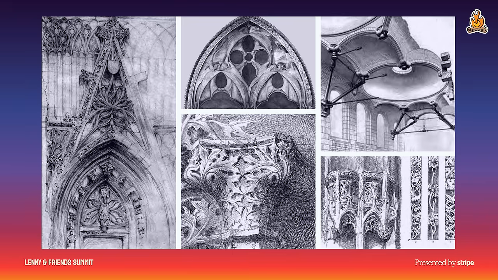
발표자에 따르면 John Ruskin은 품질과 장인 정신에 대해 많은 글을 썼고, 고딕 건축을 위대함의 정점으로 꼽았어요. 그가 본 건 고딕 건물이 하나도 같지 않다는 점이에요. 기둥 하나조차 다른 기둥과 같지 않았어요. 디테일 하나하나가 따로 다듬어졌고, 만든 사람의 손과 생각이 보였어요. 정말 아낌을 받은 물건처럼 느껴졌죠.
사용자가 감동하는 것
발표자는 이게 바로 사용자가 원하는 거라고 말해요. 사용자는 우리가 Three.js와 Blender로 30분 만에 애니메이션을 만들었다고 감동하지 않아요. 우리가 그들의 문제를 풀어 주고, 필요를 미리 내다본 영리한 디테일을 넣고, 브랜드에 성격이 있을 때 감동해요.
이번 빌딩 붐에서 디지털판 좀비 빌딩을 만들지 않을 선택권은 우리에게 있어요. 발표자는 이 시기를 창작의 르네상스로 만들자며, 더 강력하면서도 만든 사람의 손길과 아낌이 보이는 제품을 만들자고 발표를 마쳐요.